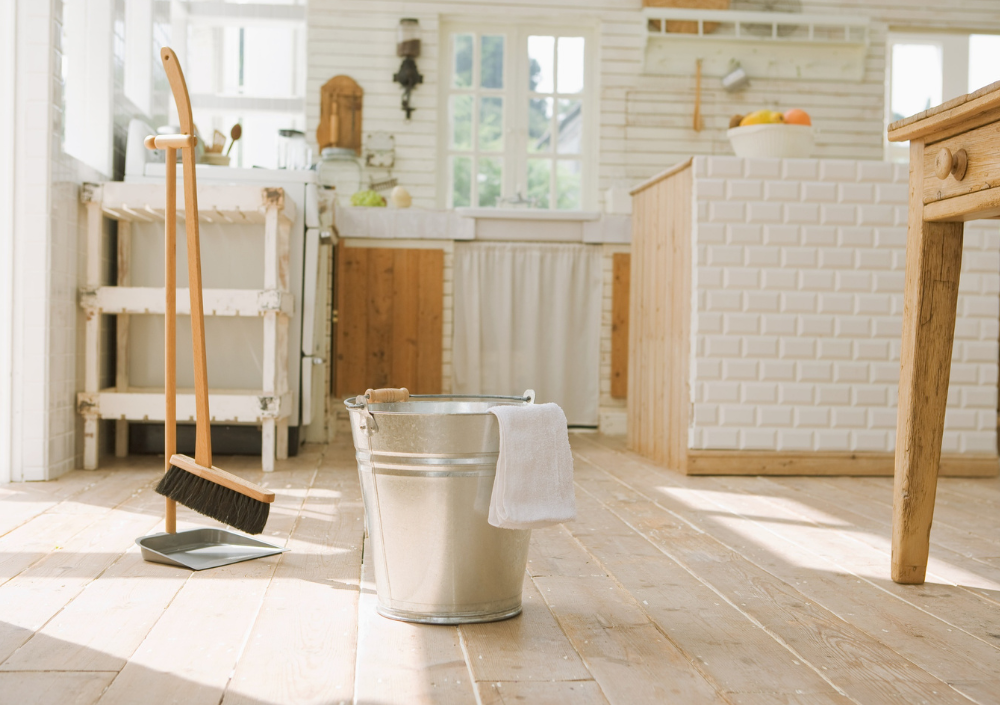

Lupa Cleaning Blog · Deep Cleaning Guides
How to Perform a Complete Deep Cleaning at Home: The Ultimate Step-by-Step Guide
Deep cleaning goes beyond everyday tidying — it eliminates hidden dirt, germs, buildup, and allergens that accumulate over time. This professional guide walks you through each essential step for a truly refreshed home.

Deep cleaning is different from standard maintenance cleaning. It reaches hidden areas, eliminates germs that normal routines don’t remove, and restores freshness to every corner of your home. Although it requires more time and effort, the results are highly rewarding — cleaner air, healthier surfaces, and a home that feels brand new.
Below is a complete, detailed guide used by professional cleaning companies for full deep cleaning sessions. Follow each step to maximize results and avoid missing important areas.
1. Start by Removing Everything From the Area
Deep cleaning begins with clearing the space. This allows access to hidden spots where dust, grease, pet hair, and debris accumulate.
What to do
- Remove items from shelves, countertops, and tables.
- Pull furniture away from walls.
- Remove rugs, décor, cushions, toys, and small objects.
- Open drawers and empty what needs sorting.
Pro tip: Use this moment to declutter — the less you own, the easier deep cleaning becomes.
2. Dust From Top to Bottom
Always follow the “top-to-bottom rule.” Dust naturally falls downward, so starting at the top prevents dirtying areas you’ve already cleaned.
Where to start
- Ceiling fans
- High shelves and cabinets
- Light fixtures and lampshades
- Curtain rods
- Picture frames and wall décor
Recommended tools
- Microfiber duster with extension pole
- Dry microfiber cloths
- Vacuum with brush attachment
Pro tip: For heavy dust, lightly dampen the microfiber cloth to prevent dust from scattering.
3. Wash Walls, Doors & Baseboards
Walls and doors accumulate fingerprints, grease, dust, and scuff marks — especially near switches and handles. Cleaning them instantly brightens any room.
How to clean effectively
- Use a bucket with warm water + a degreaser or all-purpose cleaner.
- Wipe walls with a microfiber cloth in circular motions.
- Clean doors, handles, and trims with a slightly stronger degreaser if needed.
- Finish with baseboards — one of the biggest dirt collectors in homes.
Recommended products
- Fabuloso or Pine-Sol (general cleaning)
- Krud Kutter (for heavy grease)
- Magic Eraser sponges (for scuff marks)
4. Deep Clean the Kitchen — Focus on Appliances
The kitchen is one of the most important areas in a deep cleaning. Most hidden dirt comes from grease, food residue, and long-forgotten spills.
What to clean
- Refrigerator: Clean inside shelves, drawers, handles, and seals. Remove expired items.
- Oven: Remove racks, soak them, and scrub baked-on grease.
- Microwave: Use steam (water + lemon) to soften grime and wipe clean.
- Range hood: Degrease filters and wipe the exterior thoroughly.
- Cabinets: Degrease handles and surfaces, especially near cooking areas.
Recommended tools & products
- Bar Keepers Friend (oven, stove, sink)
- Dawn Powerwash (excellent for grease)
- Degreaser like Zep Heavy-Duty
- Scrub Daddy sponges
Pro tip: Line refrigerator shelves with washable liners to make future cleaning easier.
5. Deep Clean & Disinfect Bathrooms
Bathrooms accumulate moisture, soap scum, and bacteria. A deep cleaning here ensures freshness and prevents mold growth.
What to do
- Apply disinfectant and let it sit for at least 10 minutes (dwell time matters!).
- Scrub tile grout with a stiff brush.
- Wash or replace shower curtains and liners.
- Clean inside cabinets and drawers.
- Shine mirrors and glass with a streak-free cleaner.
Recommended bathroom products
- Scrubbing Bubbles Bathroom Cleaner
- Tilex or Clorox Bathroom Bleach
- Microban 24
- Vinegar + baking soda for eco-friendly options
6. Vacuum & Refresh Upholstery
Sofas, chairs, and mattresses accumulate dust, dead skin, pet dander, and allergens — especially if not vacuumed regularly.
How to do it
- Use a vacuum with an upholstery attachment.
- Lift cushions and clean underneath.
- Vacuum mattress surfaces thoroughly.
- Use fabric spray or baking soda to deodorize.
Recommended tools
- Shark or Dyson handheld vacuums
- Bissell Little Green for spot cleaning
- Febreze Fabric for odor removal
7. Finish With a Fresh, Pleasant Scent
A clean-smelling home reinforces the feeling of deep cleanliness. After all the hard work, a subtle fragrance elevates the entire environment.
Options to refresh your home
- Natural essential oil diffusers
- Plug-in air fresheners
- Homemade sprays with water + lavender or eucalyptus oil
- Simmering pot with lemon slices and cinnamon
Just avoid strong artificial scents if you have pets or allergies in the household.
Conclusion
Deep cleaning is a transformative process that restores brightness, freshness, and hygiene to every corner of your home. By following this complete step-by-step guide, you ensure a healthier environment, improved air quality, and surfaces free from hidden contaminants.
With consistency, the results last — and your home stays cleaner for much longer.